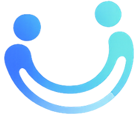
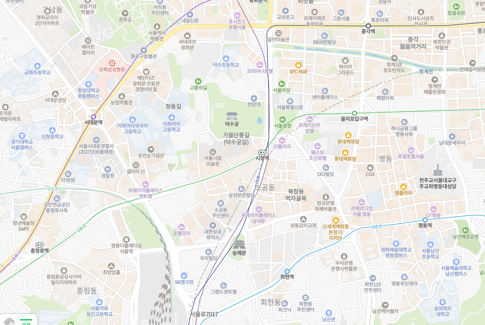
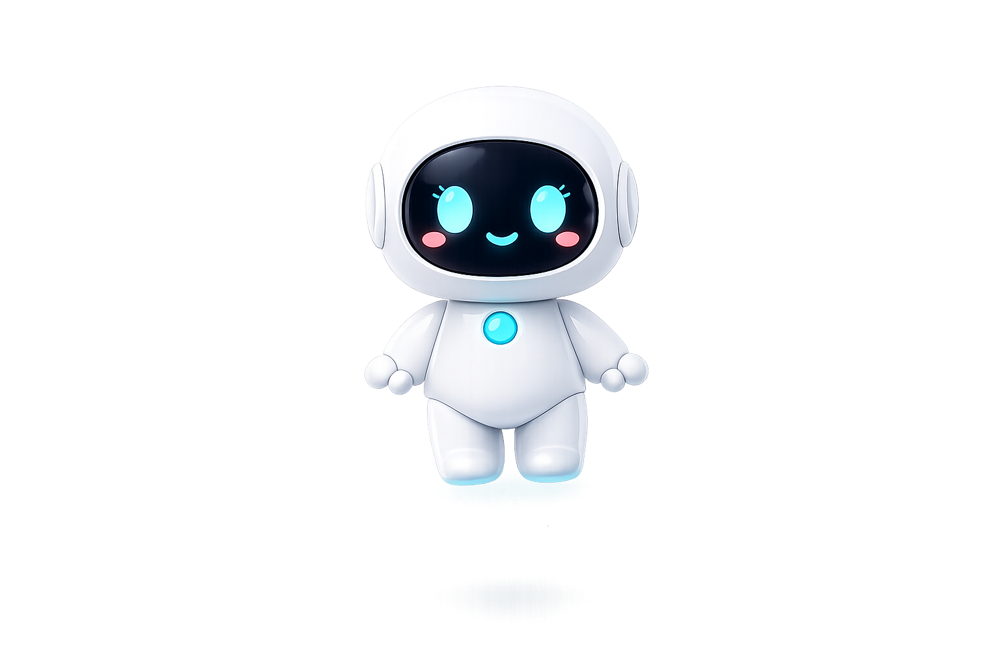
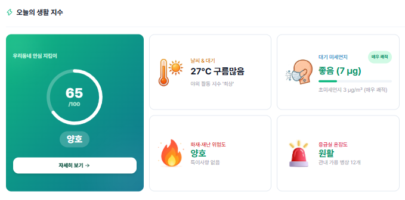

UX/UI PLANNER & PROTOTYPER
UX Design · AI Prototyping
사용자 흐름을 설계하고,
AI로 동작하는 화면까지 만듭니다.
UX → AI → Prototype
생활안전 정보를 한 곳에, AI가 도와주는 생활 밀착형 안전 플랫폼입니다.

OLA
🏥 🧑 ❤️ 📹 🚒 🧑 ❤️
ANALYZE·SUMMARIZE: 상황 분석 및 정보 요약
PRIORITIZE·GUIDE: 우선순위화 및 행동요령 제공
어떤 정보를 먼저 보여줄지, 어떤 상황에서 행동요령을 제공할지 기준을 직접 설계
지도 기반의 직관적인 '안전 가시성 지도 UI'를 기획하고, 소방서·대피소 등 최단 거리 인프라를 한눈에 확인할 수 있도록 구현했습니다.
배포 초기 유저 부재(Cold Start) 문제를 해결하기 위해, 실시간 가상 제보 피드와 인터랙티브 소통 기능을 기획·구현했습니다.
국내 체류 외국인의 언어 장벽 해소를 위해, AI 동적 답변과 정적 텍스트가 함께 다국어로 렌더링되는 브리핑 시스템을 구축했습니다.
AI에게 모든 것을 맡기지 않습니다. 문제를 나누고, 질문하고, 검증하고, 다시 시키며 완성합니다.
기존 재난·안전 정보 인프라의 한계를 분석하고 핵심 문제를 정의합니다.
기존 재난 안전 서비스들은 중요 정보가 여러 플랫폼에 파편화되어 있어,
위급 상황 발생 시 사용자가 필요한 대피소나 대처 요령을 직관적으로 즉각 파악하기 어렵다는 인프라적 한계를 식별했습니다.
기존의 분산된 4단계 정보 탐색 과정을 하나의 'AI 맞춤형 서비스 시스템'으로 통합 재설계하여, 사용자의 탐색 피로도를
혁신적으로 낮추고자 합니다.
사용자가 직접 검색하지 않아도, 위치와 기상 상황을 AI가 실시간 분석하여 홈 화면 최상단에 위험 요소와 대안을 우선 제시 하는 구조로 설계했습니다.
<!-- OLA Home — 날씨 + 재난 안전 기본 그리드 -->
<section class="weather-widget">
<h3>오늘의 날씨</h3>
<p>맑음 24°C / 강수확률 20%</p>
</section>
<section class="notice-list"> // 공지사항 및 재난 속보
<div>[공지] 정기 점검 안내</div>
<div>[속보] 강남구 호우주의보 발효</div>
</section>
<section class="category-grid grid-cols-6">
<div class="category-card">생활안전</div>
<div class="category-card">응급의료</div>
<div class="category-card">재난신고</div>
<div class="category-card">대피소</div>
<div class="category-card">민원</div>
<div class="category-card">AI상담</div>
</section><!-- 위험 요소 최우선 노출 구조 -->
<section class="ai-risk-warning"> // 최상단 · 가장 중요
<span>AI RISK WARNING</span>
<p>"오후 강수량 증가로 강남역 주변 침수 위험. 우회 경로를 이용하세요."</p>
</section>
<section class="category-grid secondary"> // 하단 · 보조 카테고리
<div class="category-card">생활안전</div>
<div class="category-card">응급의료</div>
<div class="category-card">재난신고</div>
<div class="category-card">민원</div>
</section><!-- OLA Home — 최종 완성 -->
<header class="location-bar">
<span>📍 서울특별시 강남구</span>
<span class="live-badge">LIVE AI Active</span>
</header>
<section class="ai-briefing highlight">
<h2>🔴 오늘의 AI 선제적 브리핑</h2>
<p>"오후 3시부터 강한 비가 예상됩니다. 강남대로 일대 침수 위험이 있으니 외출 시 우산을 챙기시고 하천변 산책로 이용을 자제하세요."</p>
</section>
<section class="category-grid grid-cols-2">
<div class="category-card">🚨 재난속보</div>
<div class="category-card">🏥 응급의료</div>
<div class="category-card">🛡️ 생활안전</div>
<div class="category-card">🤖 AI 1:1 상담</div>
</section>"3단계 프롬프트 구조를 기반으로, 사용자에게 심리적 안정감을 주는 그린 톤의 3D 일러스트레이션을 설계합니다. 구현 전 독립적인 그래픽 에셋의 시각적 완성도를 구축하는 단계입니다."

최종 구현 단계에서 텍스트 데이터 및 UI 컴포넌트와 유기적으로 병합하기 위해 독립적으로 설계된 고화질 일러스트 소스입니다.
"오늘 날씨, 기온, 미세먼지, 기상특보, 체감온도, 우산 필요 여부까지 최소 4~5줄 이상 구체적으로 담은 AI 브리핑을 생성해줘."
컴포넌트를 병합하는 과정에서 그래픽 일러스트 에셋과 텍스트의 정렬이 어긋나 정보의 가시성이 저하되는 현상이 확인되었습니다.
"텍스트 데이터가 한두 줄만 노출되며 레이아웃이 밀리고, 배경 일러스트 레이어 위에서 원하는 위치에 배치되지 않음."
DOM 구조와 CSS 적용 상태 확인: 그래픽 에셋 배치 시 상위 컨테이너의 정렬 기준 누적 및 텍스트 레이어의 픽셀 좌표 설정 오차 파악
"배경 일러스트 에셋을 기준으로 내부 텍스트 컴포넌트가 지정된 위치에 정확히 오도록 Flexbox 정렬 및 패딩 속성을 보정하고, 레이아웃이 깨지지 않게 코드를 수정해 줘."
✨ 레이아웃 구조 및 스타일 수정 완료: 일러스트-텍스트 간 구조화 및 가시성 확보를 위한 가로/세로 정렬 완벽 해결
"(Edge Case 발견 및 서비스 안정성 고도화) 과정을 통해, 단순히 예쁜 화면만 그리는 것이 아니라 기술적 변수나 예외 상황까지 기획적으로 예측하는 것이 중요함을 배웠습니다. 이를 촘촘하게 방어하는 UI 설계를 직접 구현해 보며, 디자이너의 논리적인 시나리오 구축 능력이 서비스의 실제 안정성과 신뢰도를 완성하는 핵심 역량임을 깊이 깨달았습니다."
정보 과잉으로 인한 선택의 피로를 낮추고, 나에게 꼭 맞춘 일정을 설계해 주는 나만의 여행 큐레이터입니다.
[추천 1] 오사카 도톤보리 3박 4일 코스. 유니버설스튜디오 재팬 즐긴 후 구로몬시장에서 다코야키와 와규 스테이크를...
[추천 2] 교토 감성 여행. 아라시야마 대나무숲 인력거 투어, 기온거리 게이샤 거리, 후시미이나리 신사 코스로...
줄글 형태의 과도한 텍스트량으로 비교 불가
MATCH: 유형·여행 조건 정의 분석
GENERATE: 선택된 여행지의 맞춤 일정 연산
AI에게 전부 위임하지 않고, 최종 선택은 사용자가 하도록 UX 단계를 분리 설계
AI가 여행지 3곳을 추천하는 초기 로직을 설계했지만, 긴 줄글형 응답이 선택 과잉(결정 장애)을 유발한다는 UX 한계를 발견하고 정보 구조를 전환했습니다.
AI 추천 결과가 카드 UX 레이아웃에 버그 없이 맞아떨어지도록 프롬프트를 고도화하고, Recommendation Card 컴포넌트를 AI로 생성해 UI에 맞게 수정·적용했습니다.
테스트 및 검증. 구현 후 실제 환경에서 검증하는 과정에서, AI가 한 번에 너무 많은 JSON 데이터를 생성하다가 중간에 코드가 툭 끊겨버리는 'JSON 데이터 잘림(Truncated)' 오류를 포착했습니다.
해결 및 개선 (Pivot). 한 번의 요청으로 모든 것을 해결하려던 초기 기획의 한계를 인정하고, 로직을 2-Step API 구조로 긴급 전환했습니다.
[1단계] 여행지 핵심 데이터만 가볍게 JSON으로 선추천 ➔ [2단계] 유저가 카드를 선택하면 상세 일정과 동선 데이터를 후속 호출.
AI 추천이 화면에 머무르지 않고, 터치 한 번으로 탐색→선택→일정 자동 편성까지 이어지는 인터랙션 흐름을 완성했습니다.
익숙한 경험에 새로운 기술을 더하는 사람입니다.